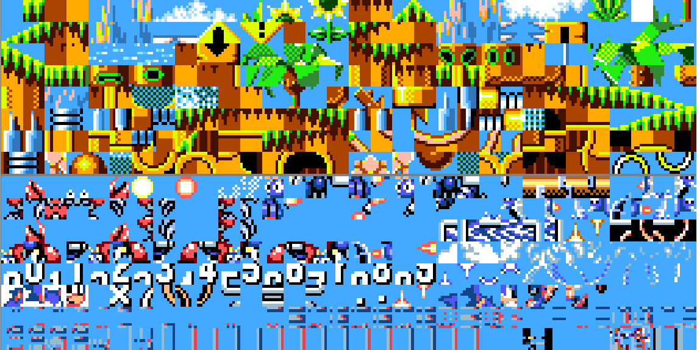
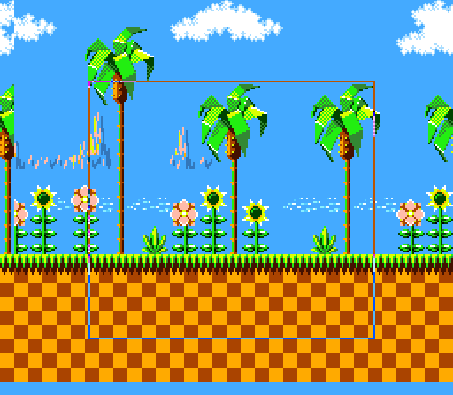
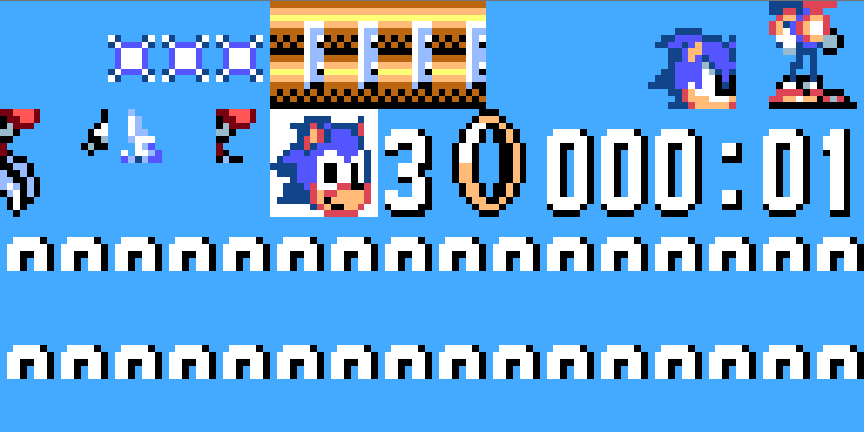
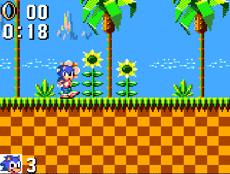
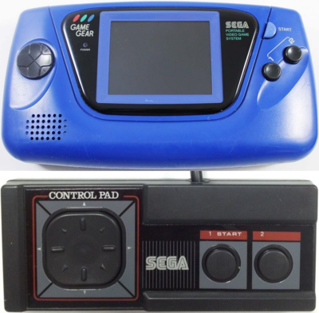

Welcome to Lesson 2. In this lesson we'll look at the Game Gear hardware in depth. Don't worry if you don't understand every single thing in this lesson; you only need a reasonable understanding of how this all works.
Note that if you already know how the GG works, you probably don't need to read this section. You may wish to anyway, though, as my jargon might be different than what you might use.
As the diagram above shows, the Sega Game Gear is based around a Zilog Z80 processor clocked at 3.579545 MHz. The Z80 is connected to the cartridge ROM, 8 kilobytes of internal SRAM, the Game Gear VDP, the SN76489 PSG, the buttons on the face of the console, and some other hardware to control the Gear-to-Gear (serial) port and other system hardware.
Note that in the real console, almost all of these components are connected to the Z80 via a chip known as the I/O controller. However, the I/O controller is transparent to the programmer, simply routing signals to the right destination, so I won't discuss it here.
The GG VDP (video display processor) is based on the Sega Master System VDP, which is in turn based on the Texas Instruments TMS9918. The TMS9918 has 4 screen modes, and the SMS/GG VDP adds a fourth mode called mode 4. While the VDP is backwards compatible with the older modes, mode 4 is much more powerful than the other modes and so is used exclusively on the Game Gear.
The GG VDP does not use a bitmap, which is how most images on modern computers and game consoles are created. A bitmap simply consists of color data for every pixel on the screen. As a result, when a bitmap is combined with a sufficiently powerful processor, any kind of image can be created.
Instead, the GG VDP uses tiles. Tiles are 8x8 pixel squares and the VDP can access up to 512 tiles at once. If you've got the artistic skill, almost any image can be created with enough tiles.
Tiles and the tilemap are stored in 16 kilobytes of memory known as video RAM (VRAM). I call the area of VRAM where tiles are stored "tile memory", as there is unfortunately no commonly used jargon. As the first diagram shows, this memory is connected to only the VDP, and the Z80 can only read and write data to it by accessing the VDP.
A tile is also limited in the number of colors it can contain. All the colors the VDP ever displays come from a special area of memory (actually contained within the VDP silicon itself) called the palette. The palette contains 32 colors, and a tile can access 16 colors from the palette.
The GG VDP differs in one major way from the Master System VDP: it can display 32 out of 4096 colors. The Master System VDP can display 32 out of only 64 colors, and even the workhorse Genesis only supports 512 colors (though it can display a minimum of 64, and supports more colors with special modes).
However, it's not enough to give the VDP a set of tiles and a palette. To create an image on the screen, the VDP reads a block of data called the tilemap, which tells the VDP what tiles to place and where to put them on the screen. Tiles can only be laid end-to-end; they cannot overlap.
There's one more element to discuss. Things on the screen that need to move frequently, change state, or are subject to the user's input are usually displayed as sprites. Sprites are just tiles that can be displayed at any pixel location on the screen. Sprites are limited, though, to the one half of the 512 tiles, and this half is usually the second half. If you look at the picture of the tiles above, you'll see that Sonic, the various badniks, the bridges, monitors, and all the other objects in the game are stored beneath the thin gray line. Beneath that line are the only tiles that sprites can access.
Sprites are also the reason that there are 32 colors and not 16. The second row in the palette are the only colors that sprites can reference, so it is called the sprite palette. Tiles, when used in the tilemap, can actually reference either row in the palette, but usually they just use the first row. There isn't a common name for the first row of the palette, but in these lessons, I call it the tilemap palette.
Lastly, the VDP only supports a maximum of 64 sprites, and will only display 8 sprites per pixel row. If more than 8 sprites are present on one row, then the 9th and up sprite will flicker or not be visible.
Hopefully you now have a pretty good understanding of the Game Gear video hardware. Let's recap:
To draw an image, the VDP pixel by pixel over the screen, starting in the upper left corner. This is known as scanning. It then reads data from VRAM, iterating over the tilemap. Each entry in the tilemap is sequential, and line breaks are implied by the fact that the screen image is 256 pixels wide, or 32 tiles. Each entry encodes information about how to display a tile:
As the VDP progresses down the screen, it reads the information for each entry in the tilemap and displays that tile accordingly. At the same time, it processes sprites in a special area of VRAM known as the sprite attribute table, or SAT. Sprites have far fewer configuration options than the tilemap: they have a Cartesian coordinate representing their upper left pixel, and what tile index to display. If the VDP's current location in the scanning process matches a sprite coordinate, and the VDP hasn't overflowed its sprite capabilities, it will draw that sprite. (It won't draw it again on the next pixel row because the coordinate maps only to the upper left of the sprite.)
devkitSMS has numerous functions to control the VDP because it's such a complicated chip. We'll use them shortly.
Obviously there's more to the Game Gear than just the Z80 and the VDP. The most recognizable component is the buttions, which are descended from the original Master System controllers.
The GG has a 4-button d-pad, 2 action buttons (creatively named "1" and "2"), and a START button. The START button is the only divergence from the Master System, and so is accessed differently from the other buttons. Luckily, we don't have to worry about exactly how any of the buttons are connected to the Z80: devkitSMS has functions to find out what keys are pressed.
The ROM is where compiled code goes, so you as the programmer barely have to think about it (devkitSMS applies configuration options to SDCC to match the GG hardware). The RAM is where the call stack and variables go, and devkitSMS also configures SDCC to place data there.
The PSG is the chip responsible for making sound in the GG. devkitSMS provides a library called PSGlib to access the PSG. We'll do this much later, though.
The EXT connector on the GG allows for communication to another GG. devkitSMS does also not support any aspect of this; once again, you have to do it yourself with either SDCC's hardware access extensions or Z80 assembly language. Also, the EXT port's functionality is rarely emulated, so if you're going to use it, you should get yourself a flashcart and a real GG.
In this lesson you learned about how the Game Gear's hardware works, in particular the VDP. In the next lesson we'll go a little deeper and use more advanced features of devkitSMS than we have so far.